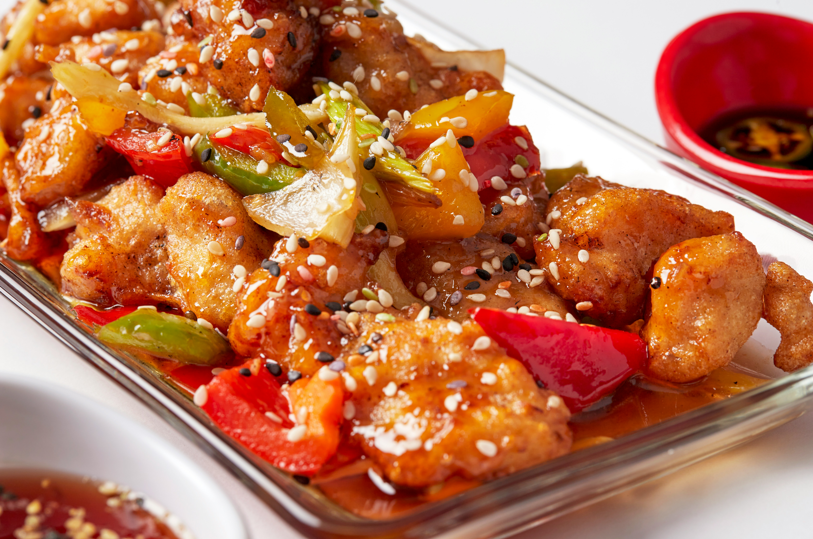

Sweet & Sour Checken
Sweet and sour chicken is a famous Chinese dish known for its perfect balance of flavors. Crispy fried chicken
pieces are coated in a tangy and slightly sweet sauce made from vinegar, sugar, and ketchup, often mixed with
pineapple and bell peppers. Its unique combination of sweet and sour taste makes it a favorite among Chinese
food lovers.
Go Back